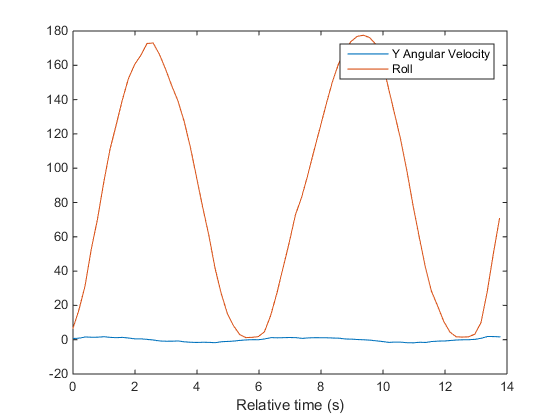
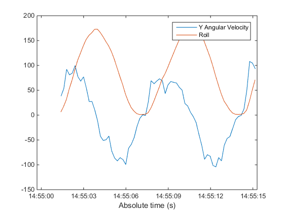

This example shows how to plot data from multiple sensors on an Apple iOS device together in one timeline. Measurements of angular velocity and orientation will be collected from the device and plotted over absolute time. This will allow correlations between data from two sensors to be visualized based on the actual time of measurement.
In order to receive data from an Apple iOS device in MATLAB®, you will need the MATLAB Mobile™ app (version 2.0). You can download this app from App Store℠.
Use MATLAB Connector to allow connection between your desktop MATLAB session and MATLAB Mobile on your Apple iOS device. Your device must be able to connect to your desktop, either by being on the same network, using a VPN, or through a similar configuration.
Execute the connector command with a password of your choice.
connector on yourpassword;
DNS name: COMPUTERNAME.YOURDOMAIN.com IP address: 192.168.1.1 Use this link to test the MATLAB Connector: http://COMPUTERNAME.YOURDOMAIN.com:31415 If the test is successful, but MATLAB Mobile cannot connect, your computer might have multiple IP addresses. To determine the correct one, see Determining the DNS Name or IP Address of a Computer.
Your computer's DNS name and IP address are displayed on the MATLAB Command Window, along with a test link. Click on the test link to ensure that your desktop is ready to connect. The last digits after the colon on the test link correspond to the port that has been opened.
Now you can connect MATLAB Mobile to your desktop.
If you are launching MATLAB Mobile for the first time, select Connect to Your Computer. If you previously connected to the cloud or a different desktop, go to the Settings screen and select Add a Computer from the Connect to Your Computers section. On the Add a Computer screen, enter the DNS name or IP address that was displayed in the previous step. Then, enter the Connector password that you previously specified, as well as the port that was opened. Finally, press the Connect button. MATLAB Mobile should now be connected to your desktop MATLAB session.
Use the mobiledev command to create an object that represents your mobile device.
m = mobiledev
m =
mobiledev with properties:
Connected: 1
Logging: 0
InitialTimestamp: ''
AccelerationSensorEnabled: 0
AngularVelocitySensorEnabled: 0
MagneticSensorEnabled: 0
OrientationSensorEnabled: 0
PositionSensorEnabled: 0
The displayed output should show Connected: 1, indicating that the mobiledev object has successfully established a connection to the app.
Use the appropriate mobiledev properties to enable sensors on the device.
m.AngularVelocitySensorEnabled = 1; m.OrientationSensorEnabled = 1;
After enabling the sensors, the Sensors screen of MATLAB Mobile will show the current data measured by the sensors. The Logging property allows you to begin sending sensor data to mobiledev.
m.Logging = 1;
The device is now transmitting sensor data. A pause is included to allow for some measurements to be made before moving to the next steps, but is not required for logging to occur.
pause(15);
At the start of logging, the device is lying flat on a table with the screen facing up. The positive Y-axis of the angular velocity sensor is defined to extend out from the top of the device. Positive roll of the orientation sensor is defined as a clockwise rotation about the Y-axis when facing the positive direction of the axis.
During logging, the device is turned face-up and face-down a few times about its Y-axis. This generates Y-axis changes in angular velocity and roll changes in orientation.
The Logging property is used again to have the device stop sending sensor data to mobiledev.
m.Logging = 0;
Each sensor's data can be accessed from the mobiledev object. Two different timestamp variables are created because the angular velocity and orientation data may not be recorded by the device at the same time.
[av, tav] = angvellog(m); [o, to] = orientlog(m);
The data of interest from the sensors are isolated into separate variables and plotted.
yAngVel = av(:,2); roll = o(:, 3); plot(tav, yAngVel, to, roll); legend('Y Angular Velocity', 'Roll'); xlabel('Relative time (s)');

The data is plotted in seconds relative to mobiledev's InitialTimestamp property. This property provides the absolute time of the first data point recorded by a sensor and sent to MATLAB. It acts as the reference point for the timestamps of all sensor data accessed using functions such as angvellog and orientlog, which are given in seconds relative to InitialTimestamp.
To convert all sensor timestamps into absolute timestamps, the InitialTimestamp value is converted into a datetime object. The individual sensor timestamps, which are in units of seconds, are converted into seconds. This simplifies the date arithmetic of turning relative timestamps into absolute timestamps.
tInit = datetime(m.InitialTimestamp, 'InputFormat', 'dd-MM-yyyy HH:mm:ss.SSS'); tAngVel = tInit + seconds(tav); tOrient = tInit + seconds(to);
Both sensors now have absolute timestamps represented using datetime. This makes it easy to visualize the actual time that significant events occurred in sensor readings.
The orientation sensor uses units of degrees, while the angular velocity sensor uses units of radians per second. Before plotting again, yAngVel is converted to degrees per second.
yAngVelDeg = yAngVel * 180/pi; plot(tAngVel, yAngVelDeg, tOrient, roll); legend('Y Angular Velocity', 'Roll'); xlabel('Absolute time (s)');

Turn off the enabled sensors and clear mobiledev.
m.AngularVelocitySensorEnabled = 0;
m.OrientationSensorEnabled = 0;
clear m;